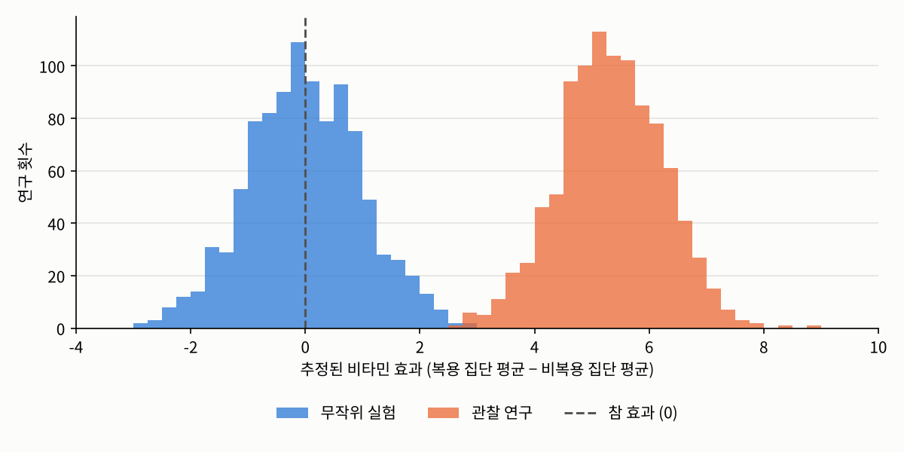

1.3 데이터는 어떻게 모이는가
1장 통계란 무엇인가 · 표본 추출, 편향, 그리고 실험
들어가며
지난 글에서는 표본 \(X_1, \dots, X_n\)이 모집단에서 무작위로 뽑힌 i.i.d. 표본이라고 가정하고, 모집단을 하나의 확률분포로 보았습니다. 이 가정 덕분에 표본으로 모집단을 이야기할 수 있게 되었습니다.
그런데 이 가정은 공짜가 아닙니다. 데이터가 실제로 그렇게 모였을 때에만 성립합니다. 이번 글에서는 데이터가 모이는 과정을 살펴보겠습니다. 먼저 역사상 가장 유명한 여론조사 실패 사례로 표본을 뽑는 방법과 편향을 살펴보고, 그다음 데이터를 “지켜봐서” 얻는 경우와 “개입해서” 얻는 경우가 어떻게 다른지, 그 차이가 왜 중요한지를 시뮬레이션으로 확인하겠습니다.
240만 명에게 물어본 여론조사
1936년 미국 대통령 선거를 앞두고, 당시 인기 있던 잡지 『리터러리 다이제스트』(The Literary Digest)는 엄청난 규모의 여론조사를 벌였습니다. 전화번호부, 자동차 등록 명부, 잡지 구독자 명단 등에서 모은 약 1000만 명에게 모의 투표 엽서를 보냈고, 그중 약 240만 장이 돌아왔습니다.1 지금 기준으로도 어마어마한 표본 크기입니다.
엽서를 집계한 결과는 공화당 후보 앨프 랜던(Alf Landon)이 약 55%, 현직 대통령 프랭클린 루스벨트(Franklin D. Roosevelt)가 약 41%였습니다. 잡지는 랜던의 승리를 예측했습니다.
실제 선거 결과는 정반대였습니다. 루스벨트가 약 61%를 얻어 압승했고, 랜던은 48개 주 가운데 단 두 개 주에서만 이겼습니다. 240만 명에게 물어보고도 승자조차 맞히지 못한 것입니다.
무엇이 잘못되었을까요? 이후의 분석들은 크게 두 가지를 지적합니다.2
- 누구에게 물었는가. 1936년은 대공황 한복판이었습니다. 전화와 자동차를 가진 사람, 잡지를 구독하는 사람은 평균보다 형편이 나은 사람들이었고, 이들은 상대적으로 랜던을 더 지지했을 가능성이 높습니다. 즉 처음부터 엽서를 받을 사람의 명단이 전체 유권자를 대표하지 못했습니다.
- 누가 대답했는가. 1000만 명 중 대답한 사람은 4분의 1이 안 됩니다. 일부러 엽서를 써서 돌려보낸 사람들은 그렇지 않은 사람들과 성향이 달랐을 수 있고, 특히 현 정부에 불만이 큰 사람들이 더 적극적으로 응답했을 가능성이 지적됩니다.
이 사례가 주는 교훈은 분명합니다. 표본이 크다고 좋은 표본이 되는 것은 아닙니다. 엉뚱한 곳에서 뽑은 240만 명은 잘 뽑은 수천 명보다 못할 수 있습니다. 데이터를 아무리 많이 모아도, 모으는 방식이 한쪽으로 치우쳐 있으면 결과는 그 치우친 쪽으로 더 확실하게 굳어질 뿐입니다.
무작위 추출
그렇다면 “잘 뽑는다”는 것은 무엇일까요? 지난 글에서 본 것처럼, 핵심은 모집단의 모든 구성원이 똑같은 기회로 뽑히게 만드는 것입니다.
단순 무작위 추출에서는 누가 뽑힐지를 조사하는 사람이 정하지도, 응답자가 스스로 정하지도 않고 오직 우연이 정합니다. 이렇게 하면 표본이 우연히 한쪽으로 쏠릴 수는 있어도, 체계적으로 한쪽으로 쏠리지는 않습니다. 그리고 우연히 쏠리는 정도가 얼마나 되는지는 확률로 계산할 수 있습니다. 바로 이것이 추론 통계가 작동하는 바탕입니다. 지난 글에서 본 것처럼, 모집단이 표본보다 충분히 크면 단순 무작위 추출로 얻은 표본은 i.i.d. 표본으로 볼 수 있습니다.
다이제스트의 문제를 이 정의로 다시 보면, 표본 추출 틀 자체가 모집단과 달랐고(전화·자동차 소유자 명단), 그 틀 안에서도 실제로 표본에 들어간 사람은 우연이 아니라 응답자 스스로가 정했습니다.
실제 조사에서는 단순 무작위 추출을 조금 변형해서 쓰기도 합니다. 예를 들어 모집단을 지역이나 연령대별로 먼저 나눈 뒤, 각 집단에서 그 비율만큼 무작위로 뽑는 층화 추출(stratified sampling)이 대표적입니다. 이런 방법들을 체계적으로 다루는 분야를 표본 추출 이론(sampling theory)이라고 합니다. 이 과목에서는 깊이 들어가지 않고, 표본이 무작위로 잘 뽑혔다고 가정하고 진행하겠습니다.
편향의 여러 얼굴
“우연히” 잘못 대표하는 것과 “체계적으로” 잘못 대표하는 것의 차이가 중요합니다. 무작위로 뽑은 표본도 운이 나쁘면 모집단과 조금 다를 수 있지만, 같은 방법으로 다시 뽑으면 다른 방향으로 어긋나고, 평균적으로는 모집단에 맞춰집니다. 편향된 표본은 몇 번을 다시 뽑아도 같은 방향으로 어긋납니다.
편향은 여러 모습으로 나타납니다. 자주 만나는 것들을 정리해 보겠습니다.
- 선택 편향(selection bias): 표본 추출 틀이나 뽑는 방식 때문에 특정 집단이 더 많이 혹은 더 적게 뽑히는 경우입니다. 다이제스트의 전화·자동차 명단이 대표적입니다.
- 무응답 편향(nonresponse bias): 뽑힌 사람 중 응답하는 사람과 응답하지 않는 사람의 성향이 다른 경우입니다. 다이제스트에서 엽서를 돌려보낸 4분의 1이 여기에 해당합니다.
- 자발적 응답 편향(voluntary response bias): 응답자가 스스로 참여를 결정하는 경우입니다. 인터넷 투표나 상품 후기에는 강한 의견을 가진 사람이 훨씬 더 많이 참여합니다.
- 생존자 편향(survivorship bias): 어떤 과정을 “살아남은” 대상만 관찰하게 되는 경우입니다. 제2차 세계대전 당시 통계학자 에이브러햄 왈드(Abraham Wald)가 돌아온 폭격기의 피탄 자료를 분석할 때, 정말 위험한 부위는 돌아온 비행기에서 총알 자국이 없는 부위일 수 있다는 점, 그 부위에 맞은 비행기는 돌아오지 못했을 것이라는 점을 고려한 일화가 유명합니다.3
이 편향들의 공통점은 데이터만 들여다봐서는 잘 보이지 않는다는 것입니다. 데이터는 자신이 어떻게 모였는지 말해 주지 않습니다. 그래서 통계 분석은 항상 “이 데이터가 어디서, 어떻게 왔는가”를 묻는 데서 시작해야 합니다.
관찰 연구와 실험
지금까지는 “모집단의 지지율이 얼마인가”처럼 모집단의 상태를 알고 싶은 경우를 이야기했습니다. 그런데 통계가 답하려는 질문 중에는 “이 약이 효과가 있는가?”, “비타민을 먹으면 더 건강해지는가?”처럼 원인과 결과를 묻는 질문도 많습니다. 이런 질문에서는 데이터를 모으는 방식이 훨씬 더 중요해집니다.
비타민 예로 생각해 보겠습니다. 사람들에게 평소 비타민을 먹는지 묻고 건강 상태를 조사하는 것은 관찰 연구입니다. 반면 연구자가 참가자를 두 집단으로 나누어 한쪽에는 비타민을, 다른 쪽에는 겉보기에 똑같은 가짜 약을 주고 일정 기간 뒤 건강 상태를 비교하는 것은 실험입니다.
관찰 연구가 훨씬 쉽고 값싸게 데이터를 얻을 수 있습니다. 그런데 원인과 결과를 알고 싶을 때는 관찰 연구에 함정이 있습니다.
교란 변수: 함께 움직이는 숨은 원인
관찰 연구에서 비타민을 먹는 사람들이 먹지 않는 사람들보다 더 건강하게 나왔다고 해 보겠습니다. 비타민이 효과가 있다는 뜻일까요?
꼭 그렇지는 않습니다. 비타민을 스스로 챙겨 먹는 사람들은 애초에 건강에 관심이 많은 사람들일 가능성이 높습니다. 그런 사람들은 운동도 더 하고, 식단도 더 신경 쓰고, 담배도 덜 피울 것입니다. 그렇다면 두 집단의 건강 차이는 비타민 때문이 아니라 건강에 대한 관심 때문일 수 있습니다. 건강에 대한 관심이 비타민 복용과 건강 상태 둘 다에 영향을 주고 있는 것이지요.
교란 변수가 얼마나 결과를 왜곡할 수 있는지 시뮬레이션으로 확인해 보겠습니다. 가상의 세계에서 사람마다 “건강에 대한 관심”이 있고, 이 관심이 클수록 건강 점수가 높다고 하겠습니다. 그리고 비타민은 건강 점수에 아무 효과가 없다고 정해 두겠습니다. 즉 참 효과는 정확히 0입니다.
이 세계에서 200명을 대상으로 두 가지 방식의 연구를 해 보겠습니다.
- 관찰 연구: 사람들이 스스로 비타민 복용 여부를 정합니다. 건강에 관심이 많을수록 비타민을 먹을 가능성이 높습니다.
- 무작위 실험: 연구자가 동전을 던져 비타민을 줄 사람을 정합니다.
두 경우 모두 “비타민을 먹은 집단의 평균 건강 점수 − 먹지 않은 집단의 평균 건강 점수”를 비타민의 효과로 추정합니다.
import numpy as np
rng = np.random.default_rng(1557)
def one_study(n, randomized):
h = rng.normal(0, 1, size=n) # 건강에 대한 관심 (관찰되지 않음)
if randomized:
v = rng.random(n) < 0.5 # 동전을 던져 복용 여부 배정
else:
v = rng.random(n) < 1 / (1 + np.exp(-1.5 * h)) # 관심이 클수록 스스로 복용
y = 70 + 5 * h + rng.normal(0, 5, size=n) # 건강 점수: 비타민 효과는 0
return y[v].mean() - y[~v].mean()
print(f"관찰 연구 1회 : {one_study(200, randomized=False):+.2f}")
print(f"무작위 실험 1회: {one_study(200, randomized=True):+.2f}")
obs = np.array([one_study(200, False) for _ in range(1000)])
rct = np.array([one_study(200, True) for _ in range(1000)])
print(f"관찰 연구 1000회 평균 : {obs.mean():+.2f}")
print(f"무작위 실험 1000회 평균: {rct.mean():+.2f}")관찰 연구 1회 : +3.56
무작위 실험 1회: +0.81
관찰 연구 1000회 평균 : +5.33
무작위 실험 1000회 평균: -0.01코드에서 건강 점수 y를 만드는 줄에는 비타민 복용 여부 v가 전혀 들어 있지 않습니다. 그런데도 관찰 연구 한 번은 비타민이 건강 점수를 3.56점 올린다는 결과를 내놓았습니다. 무작위 실험 한 번은 0.81점으로, 0은 아니지만 훨씬 가깝습니다.
한 번의 결과만으로는 우연일 수도 있으니, 같은 연구를 1000번씩 반복해 보았습니다. 그 결과를 히스토그램으로 그리면 다음과 같습니다.

차이가 분명합니다. 무작위 실험의 추정값은 연구마다 들쭉날쭉하지만 참값 0을 중심으로 퍼져 있고, 1000번의 평균은 \(-0.01\)입니다. 반면 관찰 연구의 추정값은 연구마다 들쭉날쭉할 뿐 아니라 전체가 통째로 5 근처로 밀려나 있습니다. 1000번을 반복해도, 표본을 늘려도 이 어긋남은 사라지지 않습니다. 앞에서 본 편향과 같은 모습입니다.
여기서 두 종류의 오차를 구분해 볼 수 있습니다. 무작위 실험의 추정값이 0 주변에서 흔들리는 것은 우연에 의한 오차이고, 이것은 표본을 늘리면 줄어들며 얼마나 흔들리는지를 확률로 계산할 수도 있습니다. 관찰 연구의 추정값이 5 근처로 밀려난 것은 체계적인 오차, 즉 편향이고, 이것은 데이터를 아무리 많이 모아도 줄어들지 않습니다. 앞으로 이 과목에서 다룰 추론 통계의 도구들은 대부분 첫 번째 오차를 다루는 도구입니다. 두 번째 오차는 데이터를 모으는 단계에서 막아야 합니다.
무작위 배정이 하는 일
무작위 실험은 왜 교란 변수의 영향을 받지 않았을까요? 동전을 던져 복용 여부를 정했기 때문에, 건강에 관심이 많은 사람과 적은 사람이 두 집단에 고르게 섞였기 때문입니다. 두 집단은 비타민을 먹었느냐 아니냐만 다르고, 나머지 모든 면에서 평균적으로 비슷해집니다. 그러니 두 집단의 차이가 있다면 그것은 비타민 때문이거나 우연 때문이고, 우연의 크기는 확률로 따져 볼 수 있습니다.
무작위 배정의 진짜 힘은 우리가 모르는 교란 변수까지 고르게 섞어 준다는 데 있습니다. 위 시뮬레이션에서는 우리가 “건강에 대한 관심”이라는 교란 변수를 알고 있었지만, 현실에서는 어떤 교란 변수가 숨어 있는지 다 알 수 없습니다. 무작위 배정은 그런 것까지 한꺼번에 처리해 줍니다.
실험을 설계할 때 무작위화가 왜 필요한지를 체계적으로 정리한 사람이 1장 소개 글에서 이름이 나왔던 로널드 피셔입니다. 그는 1935년 『실험 계획법』(The Design of Experiments)에서, 홍차에 우유를 먼저 넣었는지 나중에 넣었는지 맛으로 구별할 수 있다고 주장한 한 여성의 이야기를 예로 들어 실험을 어떻게 설계하고 결과를 어떻게 판단해야 하는지를 설명했습니다.4 이 “홍차 맛보기” 이야기는 8장 가설 검정에서 다시 만나게 됩니다.
실험을 할 수 없을 때
그렇다면 원인을 알고 싶을 때는 늘 무작위 실험을 하면 될까요? 안타깝게도 그럴 수 없는 경우가 많습니다. 흡연이 폐암을 일으키는지 알고 싶다고 해서, 사람들을 무작위로 나누어 한쪽에 수십 년간 담배를 피우게 할 수는 없습니다. 실험이 윤리적으로 불가능하거나, 너무 비싸거나, 현실적으로 할 수 없는 경우에는 관찰 연구에 기댈 수밖에 없습니다.
실제로 흡연과 폐암의 관계는 1950년대 영국의 리처드 돌(Richard Doll)과 브래드퍼드 힐(Austin Bradford Hill) 등이 수행한 관찰 연구들로부터 밝혀지기 시작했습니다.5 이런 연구들은 교란 변수의 가능성을 하나씩 따져 보고, 여러 연구에서 같은 결과가 반복되는지 확인하는 등의 방식으로 관찰 연구의 약점을 보완했습니다.
관찰 데이터로부터 원인과 결과를 이끌어 내는 방법을 체계적으로 연구하는 분야를 인과 추론(causal inference)이라고 합니다. 이 과목에서는 깊이 들어가지 않지만, 4장에서 상관관계와 인과관계의 차이, 그리고 교란 변수가 만드는 대표적인 착시인 심슨의 역설을 다시 살펴보겠습니다.
정리
이번 글에서는 데이터가 모이는 과정을 살펴보았습니다.
- 표본이 크다고 좋은 표본은 아닙니다. 240만 명의 응답도 모으는 방식이 치우치면 틀린 결론을 냅니다.
- 단순 무작위 추출은 우연이 표본을 정하게 해서 체계적인 쏠림을 막습니다. 이것이 i.i.d. 가정의 바탕입니다.
- 데이터를 모으는 과정 때문에 표본이 체계적으로 어긋나는 것을 편향이라고 하며, 선택 편향, 무응답 편향, 자발적 응답 편향, 생존자 편향 등이 있습니다.
- 원인과 결과를 알고 싶을 때, 관찰 연구는 교란 변수 때문에 잘못된 결론을 낼 수 있습니다. 무작위 배정을 하는 실험은 알려지지 않은 교란 변수까지 고르게 섞어 줍니다.
- 우연에 의한 오차는 데이터를 늘리면 줄어들고 확률로 다룰 수 있지만, 편향은 데이터를 늘려도 사라지지 않습니다.
이제 데이터를 어떻게 바라보고, 데이터가 어디서 오는지까지 정리했습니다. 남은 질문은 “그 데이터로 무엇을 할 것인가”입니다. 다음 글에서는 통계학이 데이터를 가지고 하는 일을 기술 통계와 추론 통계로 나누어 정리하고, 이 과목 전체의 지도를 그려 보겠습니다.
연결되는 개념
- \(\leftarrow\) 이전 개념: 1.2 모집단, 표본, 확률 모형
- \(\rightarrow\) 다음 개념: 1.4 기술 통계와 추론 통계
Footnotes
S. L. Lohr & J. M. Brick, “Roosevelt Predicted to Win: Revisiting the 1936 Literary Digest Poll”, Statistics, Politics and Policy 8(1), 2017, pp. 65–84.↩︎
P. Squire, “Why the 1936 Literary Digest Poll Failed”, Public Opinion Quarterly 52(1), 1988, pp. 125–133. 표본 추출 틀과 무응답 중 무엇이 더 큰 원인이었는지에 대해서는 이후에도 논의가 이어졌습니다. D. Lusinchi, “‘President’ Landon and the 1936 Literary Digest Poll: Were Automobile and Telephone Owners to Blame?”, Social Science History 36(1), 2012.↩︎
왈드의 실제 분석 내용과 이 일화의 관계에 대해서는 다음을 참고할 수 있습니다. M. Mangel & F. J. Samaniego, “Abraham Wald’s Work on Aircraft Survivability”, Journal of the American Statistical Association 79(386), 1984, pp. 259–267.↩︎
R. A. Fisher, The Design of Experiments, Oliver and Boyd, 1935, 2장.↩︎
R. Doll & A. B. Hill, “Smoking and Carcinoma of the Lung: Preliminary Report”, British Medical Journal 2(4682), 1950, pp. 739–748.↩︎